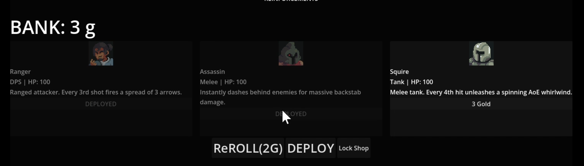
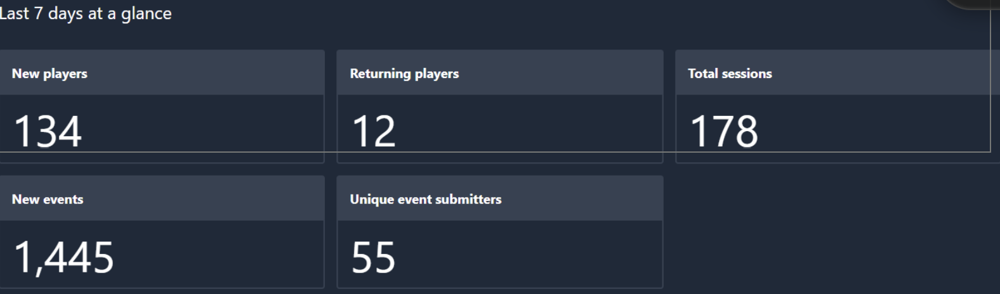
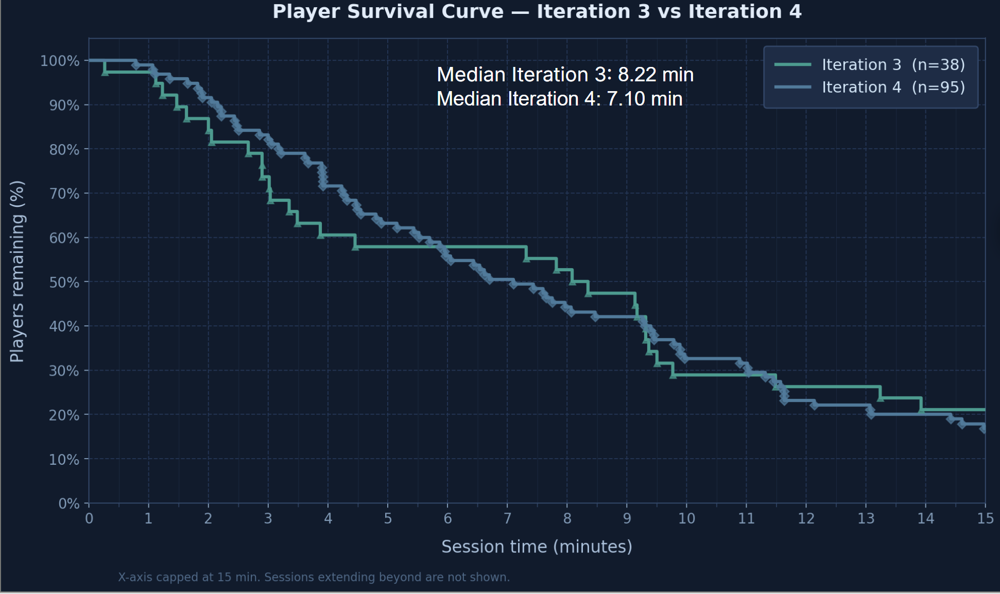

部隊を率いるサバイバー戦闘
Vampire Survivors とオートチェスに着想を得て、サバイバーの定石を「孤独な戦士」から「成長していく自律型チャンピオン部隊の指揮」へと転換しました。
ゲームプロジェクト · UW CSE 卒業キャップストーン
オートチェスに着想を得たサバイバーゲームです。軍団を築き、部隊のシナジーを見つけ出し、高まり続けるプレッシャーの中で生き残りを目指します。
コンセプト
一般的なサバイバーゲームとは異なり、Legion’s Expedition のプレイヤーは孤独な戦士ではありません。自律的に戦うチャンピオンの部隊を率いる指揮官となります。
プレイヤーは戦術的な移動、回避、精密な射撃に集中し、雇った仲間たちはそれぞれ専用の AI 行動と固有スキルで敵を見つけて交戦します。
ウェーブが進むごとに難しさが増す中で、新たなユニットを獲得し、強力な組み合わせを発見し、同じチャンピオン3体をより強い1体へと合成していきます。寄せ集めの部隊が、やがて連携の取れた戦闘集団へと成長します。
雇用システム
雇用、リロール、配置、ショップのロック。一つひとつの判断が、部隊の前衛、ダメージ構成、チャンピオンのシナジー、そして今後の合成の選択肢を左右します。

ボス戦
ボス戦では、個別に設計された攻撃パターンを通じて、移動、立ち位置、部隊構成が試されます。
システムと機能
Vampire Survivors とオートチェスに着想を得て、サバイバーの定石を「孤独な戦士」から「成長していく自律型チャンピオン部隊の指揮」へと転換しました。
6種類以上のチャンピオンがそれぞれ異なる能力を部隊にもたらし、6種類以上の雑魚敵と3体のボスが独自の攻撃パターンを持ち込みます。
同じチャンピオン3体を、より強い1体へと合成します。オートチェスでおなじみのルールで、危険度を増すウェーブに向けて部隊を強化します。
ランごとにレイアウトルールに従ってマップタイルと環境アセットを組み替え、道筋の分かりやすさを損なわずに、毎回異なる戦場を生み出します。
バイオハザードシリーズに着想を得た裏側の動的難易度システムが、ランの展開に応じてプレッシャーを調整します。
バックエンドの分析 API が、生存時間、進行状況などのプレイ指標をリアルタイムで記録し、評価とデザインの改善を支えます。
テレメトリと改善
組み込んだ分析 API が、セッション、進行状況、生存に関するデータをリアルタイムで Talo に送信します。これらの記録は学術的なレポートに活用されるほか、イテレーションをまたいでバランス調整がプレイヤーの行動にどう影響したかを比較することを可能にします。

